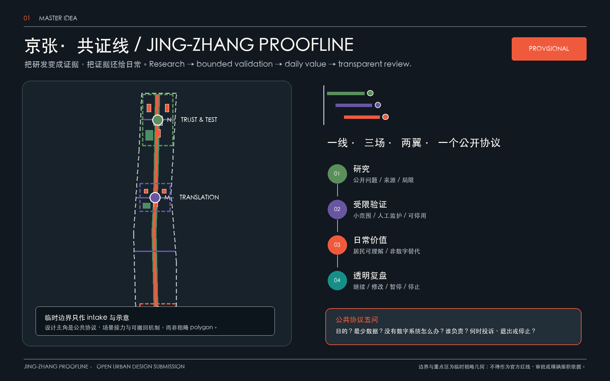
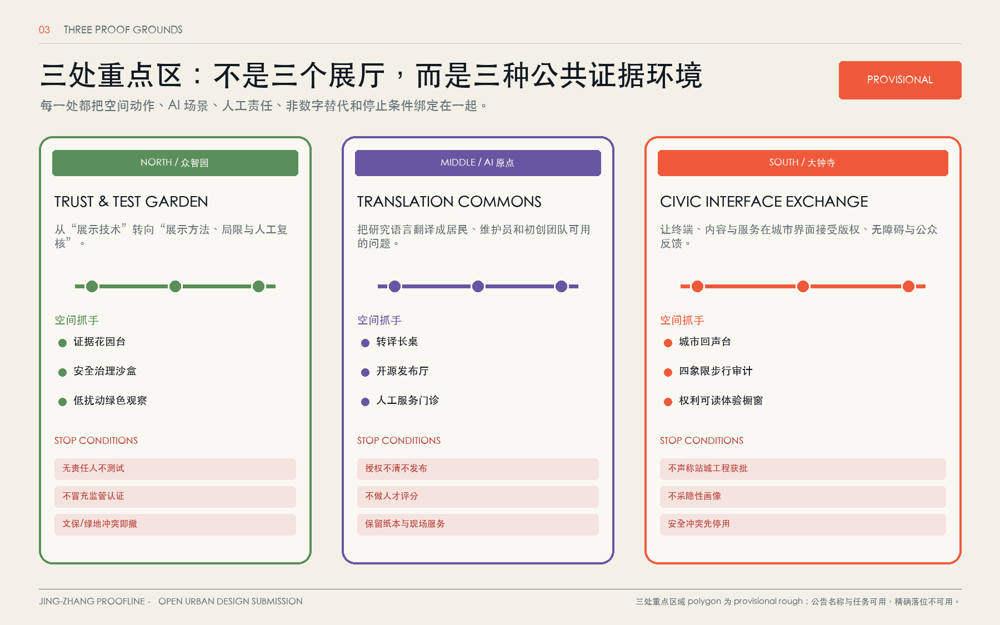
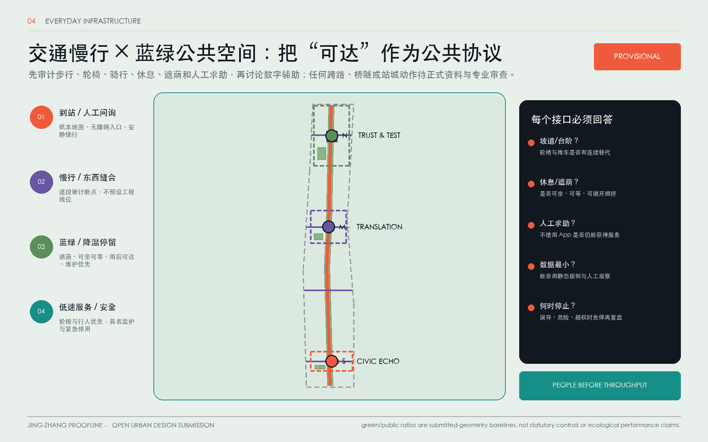
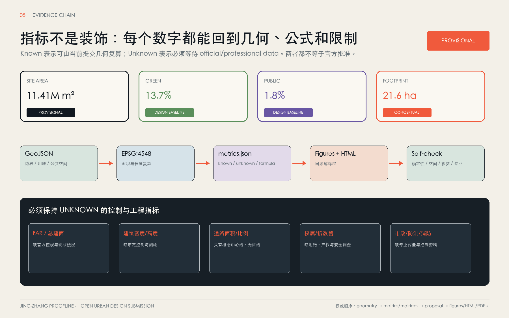

统筹研究范围
高校、研究、企业、社区与公共服务围绕公开问题、验证主题和年度复盘协作；不绘伪精确全域红线。
把百年铁路公共空间组织成一条从原始研究、受限验证、日常公共价值到透明复盘的接力线。AI 的价值不靠无处不在的感知，而靠每个场景都能被看懂、质询、拒绝、暂停与改进。
总体边界与三处重点区 polygon 均来自仓库 provisional rough geometry，只用于 intake、自检、可视化与设计讨论；不得作为官方红线、审批、精确面积、权属或法定控制依据。official polygons 到位后须全量复算。
统筹研究范围是协作网络，总体设计范围是公共接口，重点区域是三种证据环境。用地、建筑、道路、绿地、公共空间和分期来自同一临时边界并接受空间自检。

总览地图｜临时约束低对比显示，公共协议和空间关系高对比显示。
高校、研究、企业、社区与公共服务围绕公开问题、验证主题和年度复盘协作；不绘伪精确全域红线。
京张遗产公共空间主脊 + 东西向缝合 + 人工可达服务前台；概念用地形成完整分区。
北部可信验证、中部成果转译、南部城市回声；每处同时写明空间、场景、责任与 stop condition。
“建筑”在本方案中只表示可供专业团队深化的概念性小尺度公共接口，不代表现状建筑、权属、拆改留、层数、高度或建设规模。
把“展示技术”转为“展示方法、局限与人工复核”。
让研究语言变成居民、维护员和初创团队能使用、能反驳的问题。
终端、内容与服务在城市界面接受版权、无障碍和公众反馈。

三处重点区 polygon 为 provisional rough；名称、南北顺序和公告任务可用，精确落位不可用。
公共主站仅用于理解组织方式，不支持京张的边界、控制、企业名单、投资、审批或政府承诺。
work-live-play-learn 与跨学科邻近。
转译为三场之间的步行、公共服务和共享时段；不复制开发指标。
研究共同体、责任治理与创业转译。
转译为方法卡、人工复核和公开问题到原型的入口。
研究、人才与产业采用之间的桥接。
转译为资源 relay 门诊，而非自动招商或资格判定。
跨机构联盟、共同品牌与公众知识入口。
转译为年度问题清单、统一导视和公共开放机制。
研究、混合功能、开放空间与社区参与。
转译为先把创新界面做成可停留、可反馈的日常空间。
共享场所、多项目和综合创业服务。
转译为共享前台与服务目录；不照搬规模、品牌或商业模式。
“测试/验证”不等于获批部署。每个候选场景先证明公共价值、数据最小化、非数字替代、人工责任与退出/停用机制。
静态路线与设施状态；纸本地图、人工领路、触觉线并行。
误导或阻断即停用；无障碍协调员负责。
预约样例、规则版本、人工判定；也可用纸本红队脚本。
无法解释、泄露或越权即停；不冒充认证。
聚合环境数据 + 人工巡查；提供纸本建议与维护员。
数据漂移、误导或涉人识别即停。
匿名计数、障碍点和人工记录；不用个人轨迹。
发现危险先撤设备并改人工审计。
授权摘要与版本号；纸本摘要、人工讲解和离线展板。
作者可撤回；误译、版权争议即下架更正。
授权发布包、许可与角色联系人；支持纸本发布和匿名贡献。
许可不清或个人信息外泄即停止。
需求类别与公开服务目录；保留现场门诊、电话和纸本。
不做自动资格判定；错误目录可撤。
静态路口/坡道/告示 + 人工观察；站口志愿者可替代。
只作审计，不提出已批准工程。
自愿描述与时间段；纸卡、电话、口述和人工登记。
可匿名；敏感内容转人工保管，伤害信号先停。
公开服务目录与主动输入；人工台、纸本、电话转介。
不给医疗/法律结论；无法人工复核即停。
照明/开放时段与志愿巡查；纸本路线和人工陪同。
不做人脸/轨迹识别；设施失效即暂停公告。
聚合使用、投诉、退出和停用证据；也接受公开会/纸箱意见。
无责任人或非数字替代，不得续期。
发布、协作、方法声誉；不以轨迹换入口。
低门槛导师和服务转介；不做人才评分。
展示局限、评测和人工判定。
纸本、电话、现场服务与投诉入口。
无障碍连续、安静绕行和非数字替代。
版权、消费者保护与设备共存。
可信导览、简明到达和人工求助。
先审计步行、轮椅、骑行、休息、遮荫和人工求助，再讨论数字辅助。证据花园台、转译长桌、城市回声台均为可逆、可拆、可迁移的概念组件。

证据花园台显示方法、局限、人工责任和状态；转译长桌让研究者、居民与维护员共同改写问题；城市回声台接受纸卡、口述、电话与人工反馈。
任何落位须等待 official boundary、权属、消防、文保、绿地和无障碍条件复核。
核心指标来自同一 GeoJSON 和 EPSG:4548 复算；它们是临时提交几何 baseline，不是官方面积、法定绿地率、公共服务绩效或获批开发量。

每一步都先确认公开证据、权属/许可、人工责任、非数字替代和停止条件。固定设施只有在 official/professional data 与审查齐备后才可能进入研究。
官方资料清单、纸本走访、无障碍 baseline、场景责任卡。无须先建新设施。
移动组件、人工服务和预约小样；任何安全、权属或隐私冲突先停。
边界、控规、交通、市政、文保、消防和无障碍审查齐备后再研究固定改善。
年度 Proofline Review 只给出继续、修改、暂停或停止；不自动扩张。
人工无障碍/安全/噪声走访 + 可撤导视。
证据花园台、转译长桌、城市回声台先以移动组件测试。
公共目录、人工门诊、雨洪/步行/生活服务最小试验。
compliance matrix 覆盖公告 1.3、1.4、1.5 与 agent.1—agent.6；standard/depth matrices 把专业依据和缺资料项连接到 proposal、geometry、metrics、PDF 与 HTML。
命名、Logo、三大定位、五大功能、三区两翼。
六个案例、研究—转译—应用—复盘生态。
12 场景、7 persona、数据/人工/stop rule。
一线公共空间、三个地标/组件、东西缝合。
铁路耐久、中关村开放、AI 可解释文化叙事。
年度 Review、开放日、社区评议与知识沉淀。
拓扑、边界内、known metrics 同源；provisional warning 保留。
离线、本地资源、核心指标 data markers、一致性待最终命令确认。
标准、深度、来源、图层和指标 references 已组织。
参与者成果已替换；最终 deterministic/self-check 在 finalize 后执行。
仓库正式可用来源支撑任务与专业依据；国际案例只支撑背景机制；provisional geometry 只支撑 intake 和讨论。